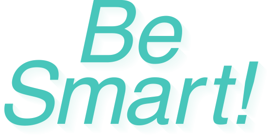
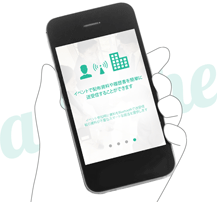
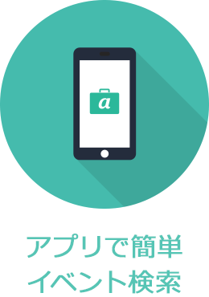
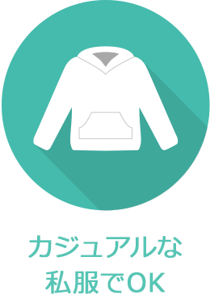
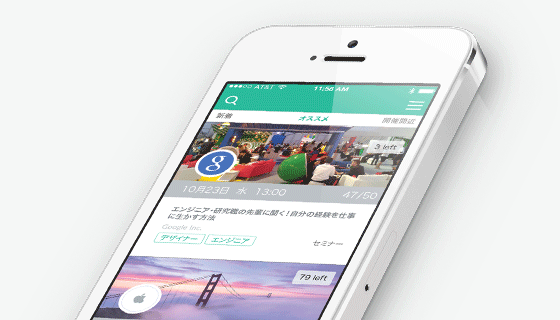

就活って、
もっとかっこいいものだと思う。
一度しかない人生の中、社会への一歩目を決めるため、頭をフル回転させながら行動する。そんな就活というこれからの数か月は、あなたを輝かせる大切な時間になるだろう。でもなぜか、「就活」という単語を聞くと、多くの人がネガティブなイメージを思い浮かべる。同じスーツ、同じ鞄、同じ髪型で「私の長所は協調性です！」と同じようなことを繰り返す学生の様子を、あなたも容易に想像できるはずだ。一方の企業側もそんな同じような学生からキラリと光る逸材を探すのに苦労している。学生も企業も、この就活という仕組みに辟易としているのだ。
もっと、スマートにいこう。学生も企業も。我々は、日本をけん引する最先端の企業と共に、就活を変えるための最初の一歩目をここ渋谷で踏み出すことにした。さあ、あなたも旧態依然の就活文化からいち早く抜け出そう。そして日本一スマートな就活スタイルを、一番最初に体感する500人になろう。
40社の最先端企業が参加
ヒカリエホールA & 出展企業のオフィス
スマホだけで完結
スマートフォンアプリでいきたいセミナーを探そう。 「attache」とは当イベント主催の株式会社ギブリーが提供する就活生向けのスマートフォンアプリです。当日参加する皆さんにはアプリをダウンロードしていただきます。アプリ上には、当イベントに参加をしている様々な企業、また、これまでにない新しい採用の取り組みをしている企業のたくさんのセミナーを探すことが出来ます。あたなに合ったセミナーをこのアプリで見つけよう。

パネルディスカッション&ピッチ
パネルディスカッションでは、"これからの就職活動と新卒採用”をテーマについてのディスカッションをパネラーにご登壇いただきおこないます。また、今までにないより学生や企業にとって価値のある新しい就職活動方法を展開されている企業様より、ピッチ形式で事例紹介をしていただきます。既存の型にはまった就活ではなく、これから就職活動をどのような方法で展開していけるのか、あなたなりの答えを探してみよう。
ブースを回ってイベントに参加
attacheを起動させて、そこに載っている説明会や、ピッチを聞いて「いいな」と思った会社をヒカリエのホール内で探してみよう！ブースを開いている企業では、ミニ説明会が開催され、交流スペースではいろいろな企業人事と話すことができます。なお、エンジニア向けには「ライブコーディングイベント」なども開催予定。また、16時30分以降は会場の外でもさまざまなイベントに参加することが出来ます。いきたい会社やセミナーを見つけてオフィスを回ってみましょう。夜には企業とディナーが食べられるイベントや、居酒屋で開催されるイベントもあるかも！？
イベント詳細
タイムライン
- 12:30 開場
- 13:00-13:15 オープニング/attacheの使い方説明
- 13:15-14:15 パネルディスカッション
- 14:15-15:00 経営者・人事のピッチタイム
- 15:00-15:15 休憩
- 15:15 ヒカリエホール内で各種イベント開催
- 16:30 会場外の企業の各オフィスにてイベント開催
- 19:00 ヒカリエホール内でのイベント終了
イベントの特徴
- 
- 
スマホひとつで始める就活を
attacheでは、就職活動での説明会やイベントを探す、 履歴書を作成する、Bluetoothを利用して説明会資料を受け取るという3つを全てスマートフォン上で行うことが可能です。スマートフォンだけで全て済ませてしまう、 attacheはそんなスマートな就活を提供します。

よくある質問
-
Q.どのくらい費用がかかるの？
参加費はかかりません！安心してご参加ください。
-
Q.誰が参加できるの？
就職活動中の2016卒の学生が中心となりますが、IT業界に興味をもっていらっしゃる学生の方なら誰でも参加できます。
-
Q.持ち物は？
ビジネス職の方は、スマホだけでOK！エンジニアの方はプログラミングコンテストエリアもございますのでPCもご持参下さい！
-
Q.attacheってなに？
attacheは色んな会社の説明会やセミナーを探したり、企業に履歴書を送ってエントリーできるアプリです。「就活カバンの中身を全部スマホ化する」がコンセプト。2015年2月にiPhone版がリリース！Android版は4月になるので、Androidユーザーの方はイベント当日、ChromeなどのブラウザからWeb版をご利用いただくことになります。紙を使ったエントリーや、面倒な履歴書もアプリで一元管理。何十社に同じ履歴書を書いて送るのって今の時代にはナンセンス！スマホを使って行きたい説明会を探し、気軽にスマートに参加できる時代の到来です！
-
Q.服装は？
もちろんスーツである必要はありません！むしろ私服で来てください！会社もみなあなたの個性を知りたいのです。
-
Q.プログラミングチャレンジって何？
エンジニアの方は、合同説明会中にステージ上で展開されるプログラミングイベントにご参加いただくことも可能です。 参加企業が出した問題に、みんなで挑戦しよう！※詳細はエントリー後にご連絡いたします。
-
Q.エントリーの締切は？
3月1日を締切としますが、他の合説とは異なるツアー形式のイベントのため、参加人数は限られます。先着５００名となりますので思い立ったら、すぐお申し込みください！
イベント概要
| イベント名 | 渋谷スマート就活 |
|---|---|
| 開催日程 | 2015年3月6日(金) 13:30〜19:00（13:00 開場） |
| 開催場所 | ヒカリエホールA 〒150-8510 東京都渋谷区渋谷2-21-1 渋谷ヒカリエ 9F 出展企業各社のオフィス |
| 最寄り駅 | 東急東横線・田園都市線、東京メトロ半蔵門線・副都心線「渋谷駅」15番出口と直結。 JR線、東京メトロ銀座線、京王井の頭線「渋谷駅」と 2F連絡通路で直結。 |
| 定員 | 500名 |
| 参加費 | 無料 |
| 主催 | 株式会社ギブリー |
| 応募締切 | 2015年3月1日（日）23:59 |
| 応募方法 | エントリーフォームより登録（ご登録後、イベント詳細やチーム分けについてご連絡いたします。 ご了承下さい。） |
アクセス
〒150-8510
東京都渋谷区渋谷2-21-1 渋谷ヒカリエ 9F